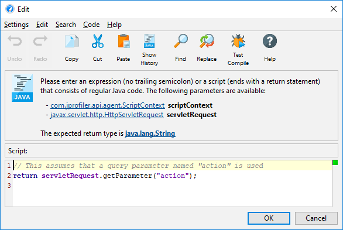
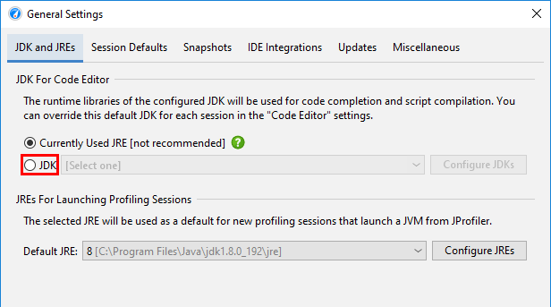
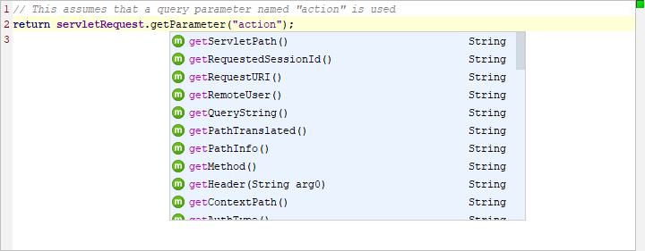
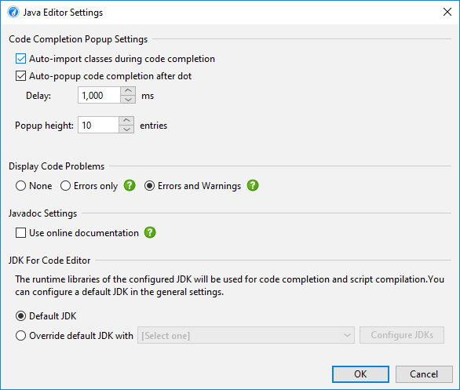

JProfiler's built-in script editor allows you to enter custom logic in various places in the JProfiler GUI, including custom probe configuration, split methods, heap walker filters and many more.

The box above the edit area shows the available parameters of the script as well
as its return type. By invoking Help->Show Javadoc Overview from the menu you can
get more information on classes from the com.jprofiler.api.* packages.
A number of packages can be used without using fully-qualified class names. Those packages are:
You can put a number of import statements as the first lines in the text area in order to avoid using fully qualified class names.
All scripts are passed an instance of com.jprofiler.api.agent.ScriptContext that allows you to save
state between successive invocations of the script.
To get the maximum editor functionality, it is recommended to configure a JDK in the general settings. By default, the JRE that JProfiler runs with is used. In that case, code completion does not offer parameter names and Javadoc for classes in the JRE.

Scripts can be expressions. An expression doesn't have a trailing semicolon and evaluates to the required return type. For example,
object.toString().contains("test")would work as a filter script in the outgoing reference view of the heap walker.
Alternatively, a script consists of a series of Java statements with a return statement of the required return type as the last statement:
import java.lang.management.ManagementFactory; return ManagementFactory.getRuntimeMXBean().getUptime();
The above example would work for a script telemetry. JProfiler automatically detects whether you have entered an expression or a script.
If you want to reuse a script that you have entered previously, you can select it from the script history. If you click on the Show History tool bar button, all previously used scripts are shown. Scripts are organized by script signature and the current script signature is selected by default.
Pressing CTRL-Space brings up a popup with code completion proposals. Also, typing
a dot (".") shows this popup after a delay if no other character is typed. The delay is configurable
in the editor settings. While the popup is being displayed, you can continue to type or delete characters with
Backspace and the popup will be updated accordingly. "Camel-hump" completion is supported. For example,
typing NPE and hitting CTRL-Space will propose java.lang.NullPointerException
among other classes. If you accept a class that is not automatically imported, the fully qualified name will
be inserted.

The completion popup can suggest:
Parameters with classes that are neither contained in the configured session class path nor in the configured JDK
are marked as [unresolved] and are changed to the generic java.lang.Object type.
To be able to call methods on such parameters and get code completion for them, add the missing JAR files
to the class path in the application settings.
The code that you enter is analyzed on the fly and checked for errors and warning conditions. Errors are shown as red underlines in the editor and red stripes in the right gutter. Warnings such as an unused variable declaration are shown as a yellow backgrounds in the editor and yellow stripes in the gutter. Hovering the mouse over an error or warning in the editor as well as hovering the mouse over a stripe in the gutter area displays the error or warning message.
The status indicator at the top of the right gutter is green if there are no warnings or errors in the code, yellow if there are warnings and red if errors have been found. You can configure the threshold for problem analysis in the editor settings.

If the gutter icon in the top right corner of the dialog is green, your script is going to compile unless you have disabled error analysis in the editor settings. In some situations, you might want to try the actual compilation. Choosing Code->Test Compile from the menu will compile the script and display any errors in a separate dialog. Saving your script with the OK button will not test the syntactic correctness of the script unless the script is used right away.
Pressing SHIFT-F1 opens the browser at the Javadoc page that describes the element at the cursor
position. Javadoc for the Java runtime library can only be displayed if a JDK with a valid Javadoc location is
configured for the code editor in the general settings.
All key bindings in the Java code editor are configurable. Choose Settings->Key Map
from the window menu to display the key map editor. Key bindings are saved in the file
$HOME/.jprofiler11/editor_keymap.xml. This file only exists if the default key map has been copied.
When migrating a JProfiler installation to a different computer, you can copy this file to preserve your
key bindings.